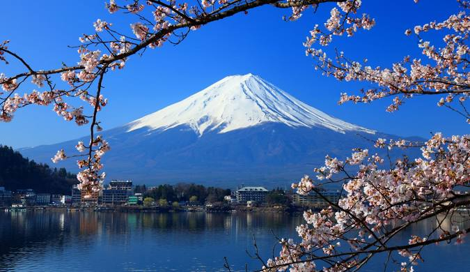

Japon
Le Japon (en japonais : 日本, Nihon, /ɲihoꜜɴ/ Écouter ou Nippon, /ɲippoꜜɴ/ Écouter) est un pays insulaire de l'Asie de l'Est, situé entre l'océan Pacifique et la mer du Japon, à l'est de la Chine, de la Corée du Sud, de la Corée du Nord et de la Russie, et au nord de Taïwan.
Étymologiquement, les kanjis (caractères chinois) qui composent le nom du Japon signifient « pays (国, kuni) d'origine (本, hon) du Soleil (日, ni) » ; c'est ainsi que le Japon est désigné comme le « pays du soleil levant ».
Le Japon forme, depuis 1945, un archipel dont le nombre d'îles varie, suivant les estimations, de 6 852 à 14 125 îles (de plus de 100 m2), dont les quatre plus grandes sont Hokkaidō, Honshū, Shikoku et Kyūshū, représentant à elles seules 95 % de la superficie terrestre du pays. L'archipel s'étend sur plus de trois mille kilomètres. La plupart des îles sont montagneuses, parfois volcaniques. Ainsi, le plus haut sommet du Japon, le mont Fuji (3 776 m), est un volcan dont la dernière éruption a eu lieu en 1707.
Ce site a pour but de survoler les principales villes du japon, et tire ses explications du site Kanpai.fr, qui s'y connaît plus que moi en tourisme au japon, ou qui du moins, n'est pas biaisé après sa visite.
Ce site est conçu dans un but éducatif dans le cadre de mes études à l'IIM Digital School, en cas de problème, vous pouvez m'envoyer un mail à kilian.dlcsr92@gmail.com . Le thème du site a lui été choisi arbitrairement par moi-même, car j'apprécie énormément le pays et sa culture. Bonne visite :)